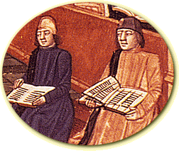

University life
 Lodging
Lodging
Students may obtain lodging at inns and halls throughout the Latin Quarter, though students of limited means are warned that many landlords will try to take advantage of them. You also should be warned that the townspeople are not always respectful of students, who have a somewhat bad reputation in Paris. Students should beware of criminals and thieves who may disguise themselves as students.

 Textbooks
Textbooks
Textbooks used by our students are handwritten on parchment. You will be able to borrow part of a work, copy it, return it, and obtain the next part. Prices are usually about a penny or two per section. Students who do not wish to copy texts themselves may hire scribes in the Latin Quarter or purchase used texts from other students.
 Dress
Dress
When attending classes, students are expected to wear academic dress, which consists of a cope or cassock, usually black.
Local tailors make copes and cassocks to order. Garments also may be purchased second-hand from other students. Trying to evade dress regulations in order to wear fashionable clothing is frowned upon.
Masters are entitled to wear special hats.